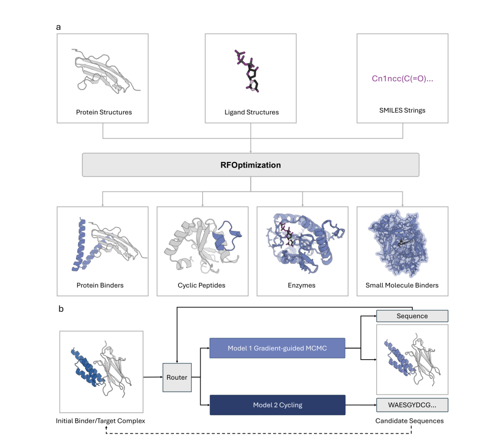
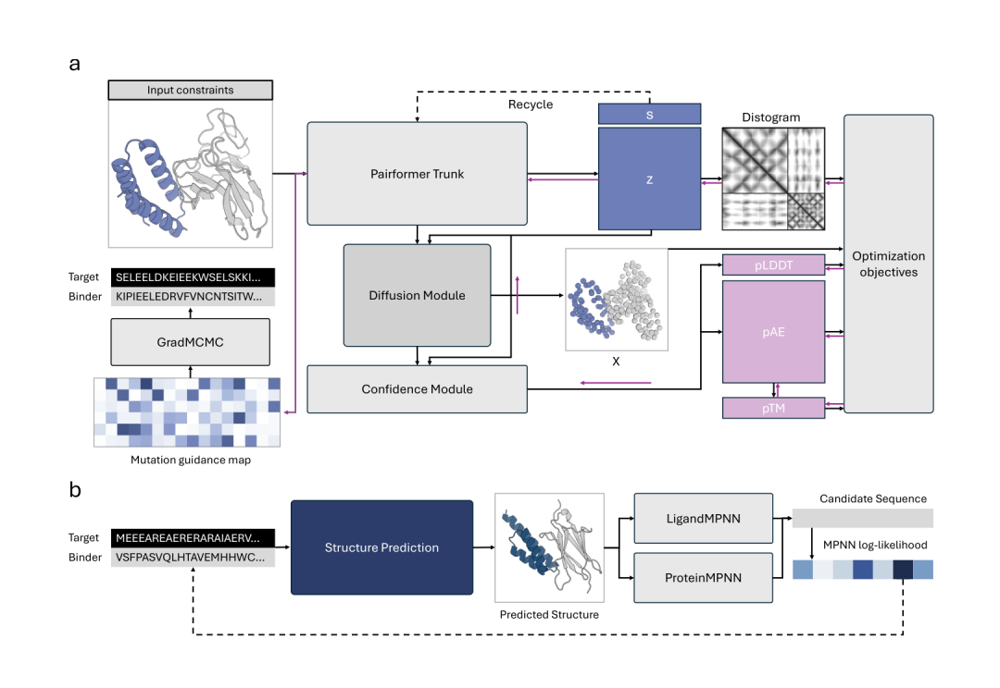
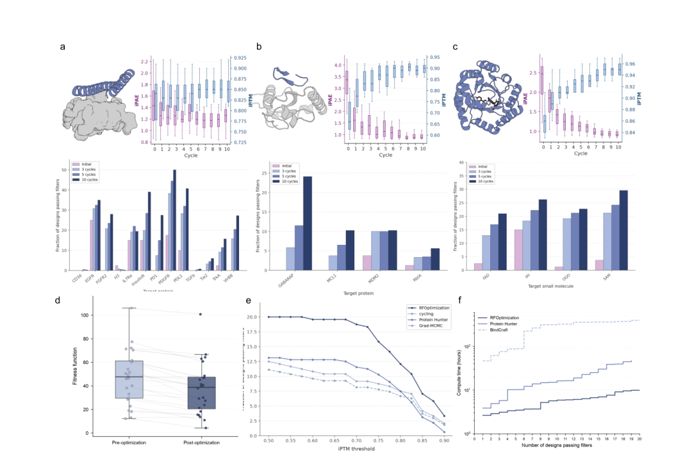

2026 年 9 月 7 日，David Baker 团队在 bioRxiv 挂出预印本 RFOptimization，简称 RFO。Baker 是 2024 年诺贝尔化学奖得主，也是华盛顿大学蛋白质设计研究所的负责人。这篇工作却没有再推出一个从零生成蛋白的模型，它盯上的是流程后段那批处境尴尬的候选物。
它们已有看上去合理的骨架，界面也许大致贴合，序列没有明显问题，只是在严格计算筛选时差了一点 iPAE 或 iPTM。前面的采样、预测和过滤已经花掉不少算力，重新大规模生成不便宜，直接扔掉又很可惜。RFO 想做的事，就是继续改这些已有设计的序列。
我大致看下来，作者想继续优化计算指标，这个判断是成立的。前文把 BindCraft 列为重要的前序工作。BindCraft 已经证明，结构预测模型给出的计算信号可以反向牵引序列和界面优化。RFO 把这条思路移到已有候选物的后处理阶段，再用多个预测器交叉筛选，试图避开单一模型高分带来的偏差。论文没有把 BindCraft 写成这项工作的唯一出发点，所以这里更适合写成我的阅读判断，而不是替作者补一个确定的研发动机。
先把边界讲清楚。本文所有结果都是计算结果。作者用多个结构预测模型做交叉评估，论证的是候选物在模型筛选中的通过率和计算效率提升。文中没有给出结合实验、表达纯化、稳定性或细胞层面的验证。因此，下面提到的成功率都应理解为计算筛选通过率，不能直接理解为真实结合成功率，更不能代替湿实验结论。
当前 de novo 蛋白设计有一个颇实际的问题。RFdiffusion 一类方法可以给出很多候选结构，可真正能够通过严格预测过滤的比例并不高。大量候选物并非完全错误，它们只是落在判定边界之外。
这篇文章的判断很直接。与其只做大规模从头采样，不如把这些边缘候选物当作局部优化的起点，在有限序列空间里找少量更好的替换。这个思路很像研发里常见的 hit 到 lead 过程。前提不是已经找到了正确答案，前提是起始分子里还有可被修复的信号。
RFOptimization 的工作，就是为这类局部修复搭了一个计算框架。

RFOptimization 面向蛋白结合体、环肽、小分子结合蛋白和酶等不同输入任务，核心输出是对既有候选序列的局部改良。
我觉得文章里最值得注意的部分，是作者没有完全押注在一个预测器的评分面上。
其中一条路线从 RoseTTAFold3 的可微输出中提取突变方向。作者绕开了扩散结构模块无法直接反向传播的问题，转而利用置信度头和 distogram 头构造优化信号，再以离散 one hot 序列形式逐步提出氨基酸替换。模型既评估候选物，也为可能值得修改的位置提供信号。
另一条路线使用不同的结构预测器 Boltz 先给出复合物结构，再用 ProteinMPNN 或 LigandMPNN 做与骨架相容的序列重设计。两条路线以相同概率交替被选中。前者更像带着目标的局部搜索，后者提供了沿着另一种结构假设重新取样的机会。

梯度引导负责定向寻找有利替换，结构预测加逆折叠负责重新采样，两者交替使用以降低单一模型偏好的影响。
这也对应了我读这篇文章时最认同的一点。结构预测模型可用于优化，前提是不能把它当成唯一裁判。单模型内的高分有时只是对该模型内部表示更友好，换一个预测器未必还能站得住。作者把 AF3 放在优化流程之外作为保留评估模型，又进一步要求 AF3、RF3 和 Boltz 同时通过阈值，至少在设计上是在认真处理这个问题。
当然，这仍然是模型之间的交叉一致性，并不是实验正交验证。它能降低一种模型特异性假阳性的风险，却不能回答亲和力、选择性、可溶性、表达量和聚集等真实研发问题。
文章把 RFdiffusion 产生的边缘候选物作为起点，并用 AF3 复折叠后的 iPAE 小于 2.5、iPTM 大于 0.8 作为主要计算成功判据。
在 13 个蛋白靶点的 protein binder 测试中，平均通过率从 6.73% 升到 22.31%。在四个环肽靶点上，平均值从 1.25% 升到 12.57%。四类小分子结合蛋白的平均值从 5.62% 升到 24.91%。原子基序酶设计这一项则采用综合 fitness，24 个目标里有 18 个在优化末端得到更低的 fitness 值。

局部优化能在多个设计任务中提高多模型筛选通过率，其中完整的双路线方案优于任一单独路线，且单位合格候选物的计算成本更低。
这张图里有几个信息，我认为比单独报一个平均倍数更重要。
第一，环肽的增益很依赖靶点。GABARAP 从零提升到 24.12%，MCL1、MDM2 和 RbtA 的增幅小得多。作者将这种差异联系到结合沟槽的几何可处理性。我的理解是，局部优化能发挥多大作用，取决于初始结构离可行解有多远，也取决于靶点给出的几何约束是否足够清楚。它不会把所有任务拉到同一条起跑线。
第二，消融结果很有分量。在三模型共识筛选下，完整方法的通过率为 12.08%，仅做循环路线为 7.50%，仅做梯度路线为 6.67%，Protein Hunter 为 7.50%。这至少支持了一个有限但有价值的判断。两种搜索方式提供的信息并不完全重叠，组合后得到的序列更容易跨模型成立。
第三，作者报出的计算效率很吸引人。以 PPI 基准中的一个共识过滤通过设计计，RFOptimization 约需 26 GPU 分钟，Protein Hunter 约需 178 分钟，BindCraft 约需 34 GPU 小时。这组数字提示了设计流程里的一个常见浪费。对于已经接近阈值的候选物，重新做海量生成未必总是最经济的选择。
我会把 RFOptimization 看成生成模型之后的一层候选物运营工具。它最适合的场景，是前端已经有一批结构上看起来接近、但还没通过计算筛选的设计。此时局部优化可以帮助团队把预算从全面重采样，转向更聚焦的序列修正。
它的价值还包括把目标函数显式交给使用者。界面置信度、接触、几何约束可以放在一个组合目标里权衡。对真实设计任务来说，这比只接受生成模型内置的偏好更接近项目需求，因为实际项目往往同时有结合、构象和功能位点等多个约束。
但我会对它的适用范围保持克制。局部搜索无法替代上游的构象采样和任务定义。种子候选物如果根本没有正确的结合模式，沿着邻近序列走十步也未必能走到可用区域。作者自己的结果已经给出提示，改善幅度会随靶点变化，而且所有判断仍建立在预测模型及其阈值之上。
对 AIDD 而言，我更愿意记住这样一句话。AI 设计的瓶颈常常包括候选物生成，也包括分辨哪些失败候选物值得再给一次机会。RFOptimization 提供了一种很务实的回答。它尝试用更低的计算成本，把接近终点的候选物往前推一段。
如果后续能看到独立湿实验对这些优化前后序列的结合、稳定性和可开发性做成对比较，这个框架的真实价值才会更清楚。现阶段，它更适合作为一个值得关注的计算优化思路，而不是已经完成临床意义验证的方法。
Odin Zhang 等人，RFOptimization Guiding Design Optimization with All Atom Structure Prediction，bioRxiv 预印本，2026 年 9 月 7 日发布，DOI 10.64898/2026.09.04.749184。